Domestic Animals
This section uses the lesson table on domestic animals and the overview slide with common animals found in Malta or kept at home or on farms.
Domestic and Farm Animal Vocabulary
Core domestic animals
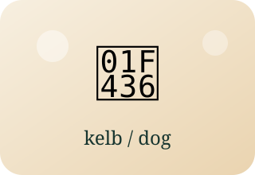
kelbdogfemale: kelbaplural: klieb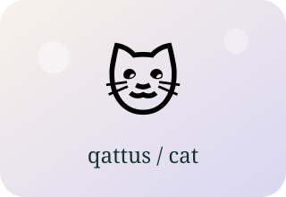
qattuscatfemale: qattusaplural: qtates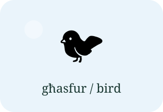
għasfurbirdfemale: għasfuraplural: għasafar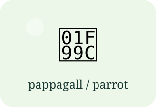
pappagallparrotgender note: mara / raġelplural: pappagalli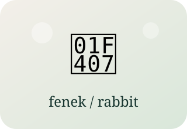
fenekrabbitfemale: fenkaplural: [UNCERTAIN]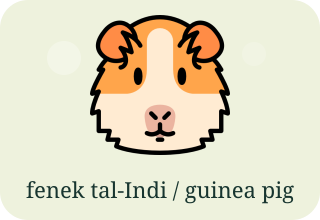
fenek tal-Indiguinea pigfemale: fenka tal-Indiplural: [UNCERTAIN]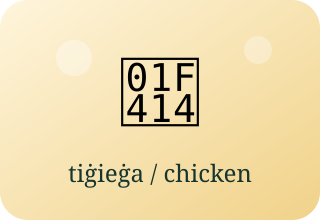
tiġieġahen / roosterpair note: serduqplural: tiġieġ / sriedaq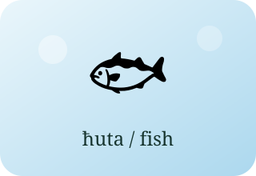
ħutafishgender note: ħuta mara / ħuta raġelplural: [UNCERTAIN]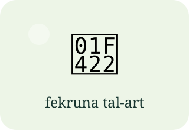
fekruna tal-arttortoisegender note: fekruna raġel / maraplural: [UNCERTAIN]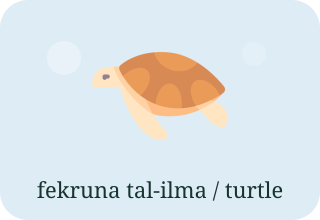
fekruna tal-ilmaturtlegender note: fekruna raġel / maraplural: [UNCERTAIN]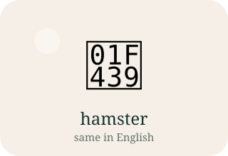
hamstersame in Englishgender note: -plural: hamsters [UNCERTAIN]Popular domestic and farm animals
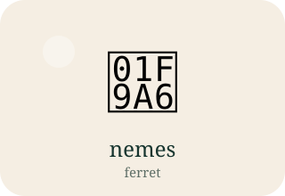
nemesferretgender note: -plural: ferrets [UNCERTAIN]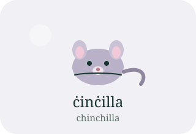
ċinċillachinchillagender note: -plural: chinchillas [UNCERTAIN]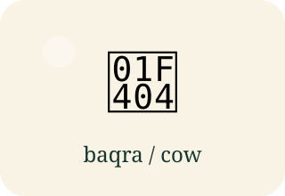
baqracow / bullpair note: barriplural: baqar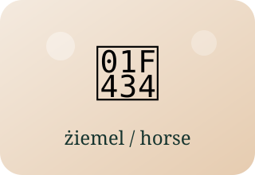
żiemelhorsegender note: -plural: żwiemel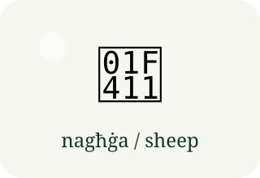
nagħġasheepgender note: -plural: [UNCERTAIN]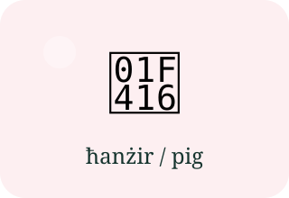
ħanżirpigfemale: ħanżiraplural: ħnieżer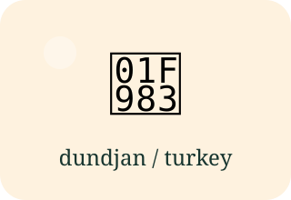
dundjanturkeygender note: -plural: dundjani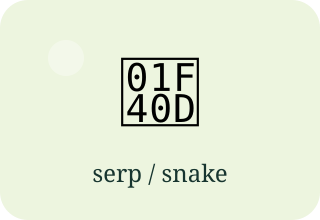
serpsnakegender note: serp mara / raġelplural: sriep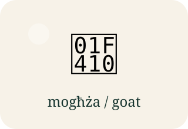
mogħżagoatgender note: -plural: [UNCERTAIN]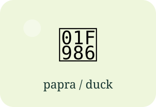
papraduckgender note: -plural: [UNCERTAIN]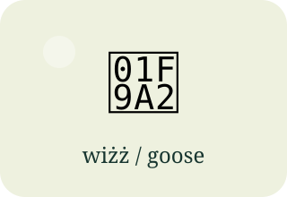
wiżżgoosegender note: -plural: [UNCERTAIN]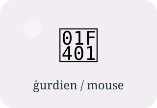
ġurdienmousegender note: -plural: [UNCERTAIN]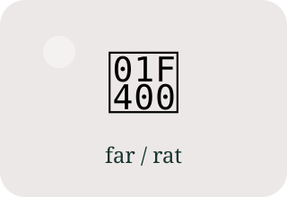
farratgender note: -plural: [UNCERTAIN]Wild and Zoo Animals
These animals come from the plural slides and the overview slide with animals that do not usually live in homes in Malta.
Wild and Zoo Animal Vocabulary
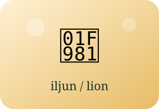
iljunlionplural: iljuni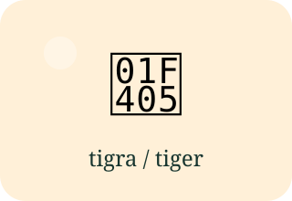
tigratigerplural: tigri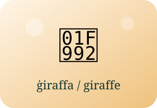
ġiraffagiraffeplural: ġiraffi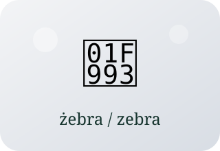
żebrazebraplural: żebri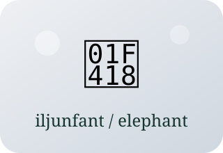
iljunfantelephantplural: iljunfanti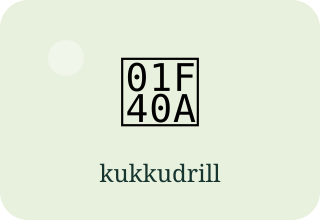
kukkudrillcrocodileplural: kukkudrilli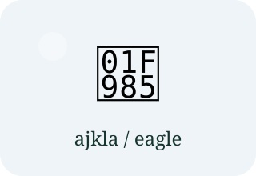
ajklaeagleplural: ajkli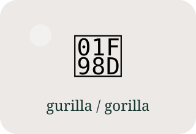
gurillagorillaplural: gurilli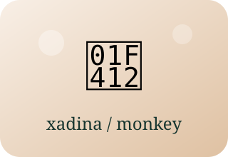
xadinamonkeyplural: xadini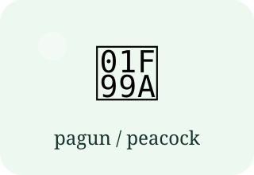
pagunpeacockplural: paguni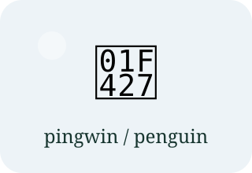
pingwinpenguinplural: pingwini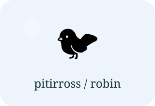
pitirrossrobinplural: pitirrossi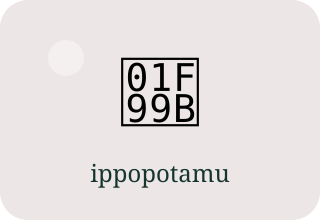
ippopotamuhippopotamusplural: [UNCERTAIN]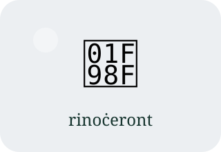
rinoċerontrhinocerosplural: [UNCERTAIN]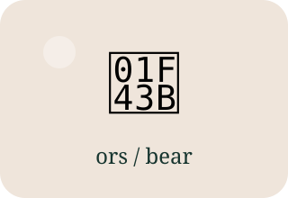
orsbearplural: [UNCERTAIN]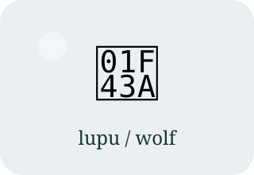
lupuwolfplural: [UNCERTAIN]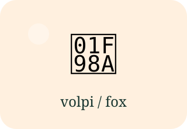
volpifoxplural: [UNCERTAIN]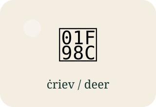
ċrievdeerplural: [UNCERTAIN]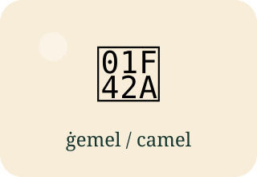
ġemelcamelplural: [UNCERTAIN]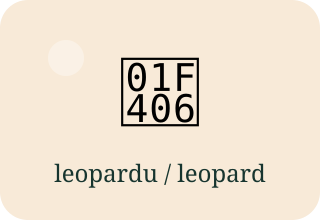
leoparduleopardplural: [UNCERTAIN]Sea animals
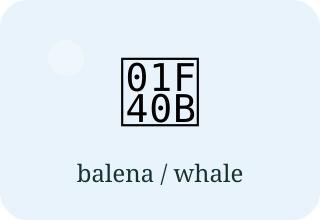
balenawhaleplural: baleni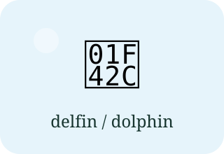
delfindolphinplural: [UNCERTAIN]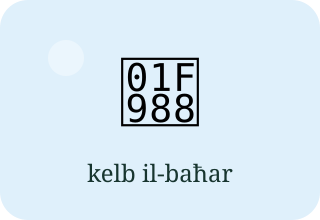
kelb il-baħarsharkplural: [UNCERTAIN]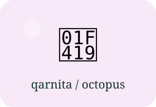
qarnitaoctopusplural: [UNCERTAIN]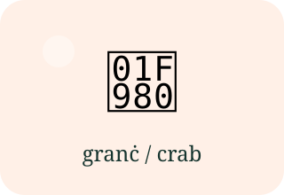
granċcrabplural: [UNCERTAIN]Small animals and insects
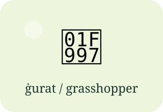
ġuratgrasshopperplural: ġuratiAnimal Description Patterns
Dan / Din / Dawn + annimal | għandu / għandha + parti
tal-ġisem | kulur + parti tal-ġisemModel From The Lesson
Għandi għasfur kbir b’munqar oranġjo. Għandu għonqu abjad u għajnejh blu.
This is one of the most useful lesson patterns: animal + colour + body part +
għandu.
50 Domestic Animal Descriptions
Short, course-safe lines for homework and oral practice. The grammar stays simple and close to the lesson.
50 Wild or Zoo Animal Descriptions
Use these lines for zoo pictures, wild animal descriptions, and short speaking answers.